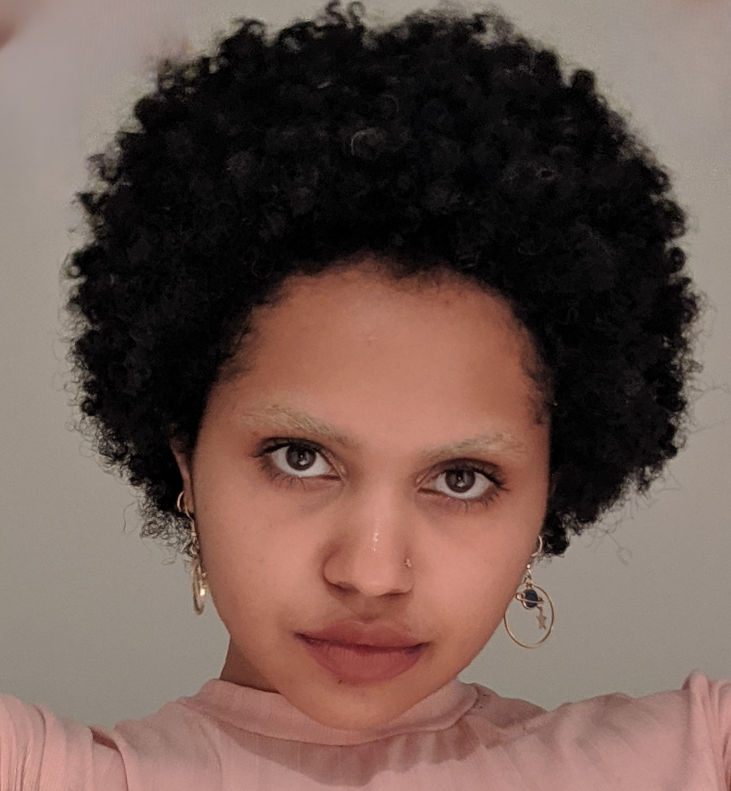

Natural hair is kinky and curly hair (type 3a and above) that has not been chemically treated or straightened. Here's a person with 4A natural hair:
Here are some natural hair styles:
Here's a playlist of different Youtube creators styling and caring for their natural hair. Check it out!
A good wash day includes:
Some good products to have on hand to promote healthy hair and hair growth (if you want that) are:
| Oils | Detanglers | Styling | Tools |
|---|---|---|---|
| Jojoba | Aloe | Mouse | Clips |
| Castor | Flaxseed | Leave-in | Detangling Brush |
© Oriel Mwaniki-Alexander 2024